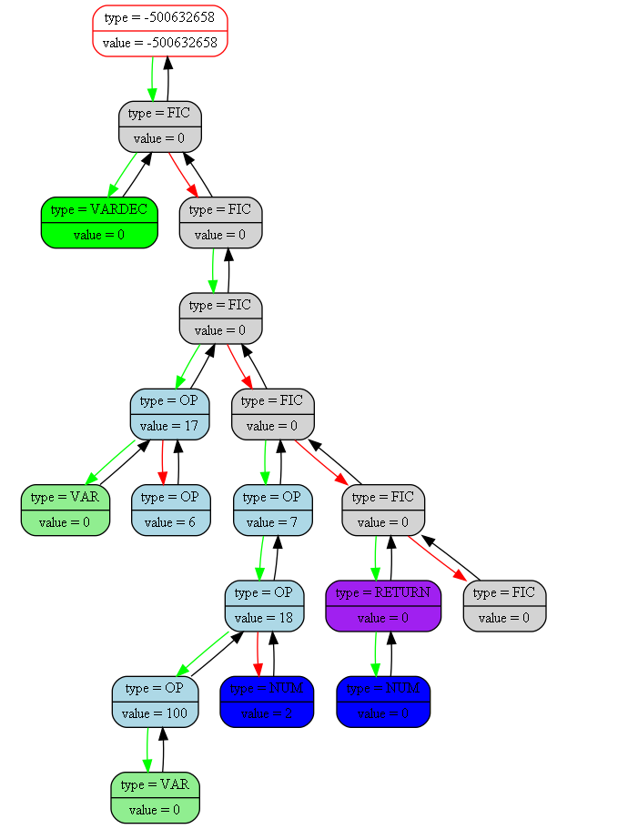
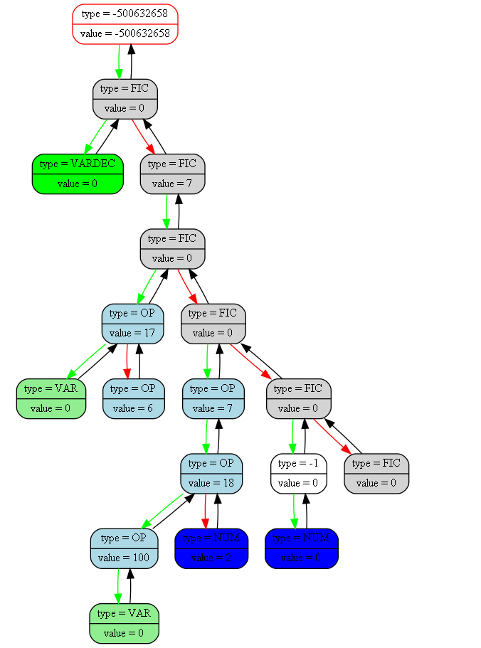

<pre>
<pre>

Tree dump from (int main(int, char**)) at (backmain.cpp) at line (24):
tree [0000004fb55ffc50] "&(prog -> tree)" at (int ProgCtor(Prog_t*)) at (front.cpp)(31):
{
	status   = 1
	error    = 0
	size     = 17

	(((TYPE = 7; VAL = 0)TYPE = 0; VAL = 0((((TYPE = 2; VAL = 0)TYPE = 6; VAL = 17(TYPE = 6; VAL = 6))TYPE = 0; VAL = 0(((((TYPE = 2; VAL = 0)TYPE = 6; VAL = 100)TYPE = 6; VAL = 18(TYPE = 1; VAL = 2))TYPE = 6; VAL = 7)TYPE = 0; VAL = 0(((TYPE = 1; VAL = 0)TYPE = 10; VAL = 0)TYPE = 0; VAL = 0(TYPE = 0; VAL = 0))))TYPE = 0; VAL = 0))TYPE = -500632658; VAL = -500632658)
}
<pre>

Tree dump from (int GenerateAsm(Prog_t*, const char*)) at (back.cpp) at line (153):
tree [0000004fb55ffc50] "&(prog -> tree)" at (int ProgCtor(Prog_t*)) at (front.cpp)(31):
{
	status   = 1
	error    = 0
	size     = 17

	(((TYPE = 7; VAL = 0)TYPE = 0; VAL = 0((((TYPE = 2; VAL = 0)TYPE = 6; VAL = 17(TYPE = 6; VAL = 6))TYPE = 0; VAL = 0(((((TYPE = 2; VAL = 0)TYPE = 6; VAL = 100)TYPE = 6; VAL = 18(TYPE = 1; VAL = 2))TYPE = 6; VAL = 7)TYPE = 0; VAL = 0(((TYPE = 1; VAL = 0)TYPE = -1; VAL = 0)TYPE = 0; VAL = 0(TYPE = 0; VAL = 0))))TYPE = 0; VAL = 7))TYPE = -500632658; VAL = -500632658)
}
